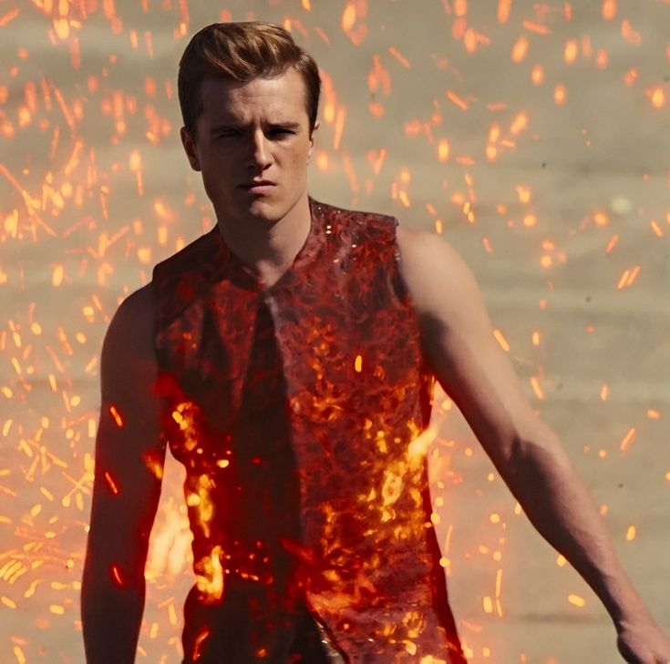
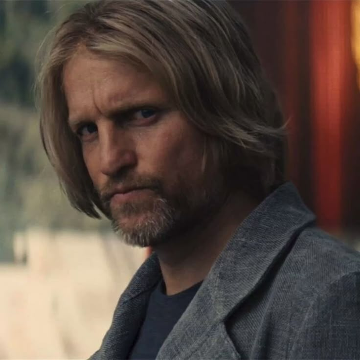
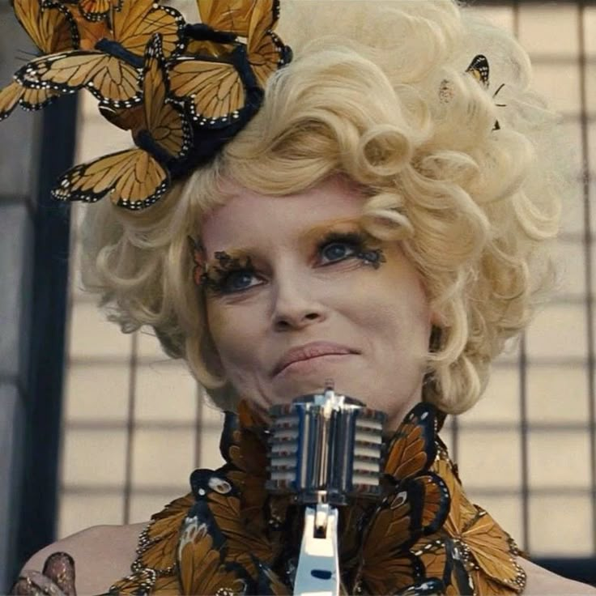
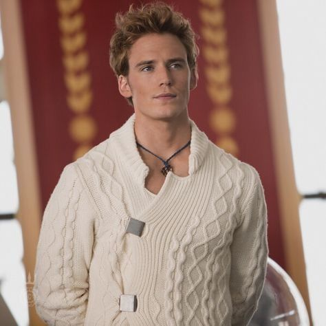
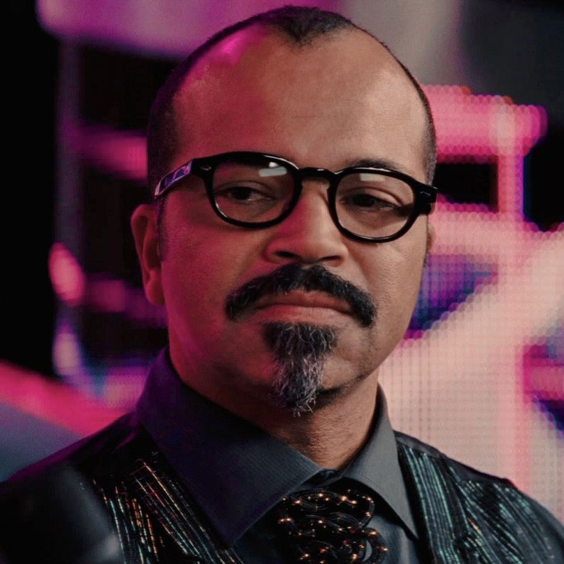
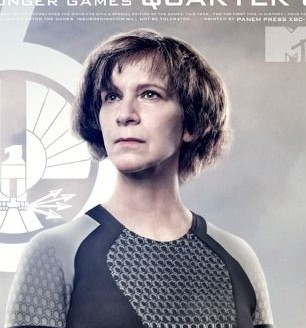
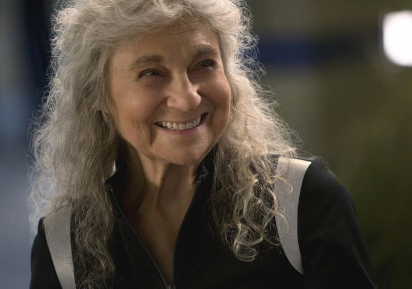
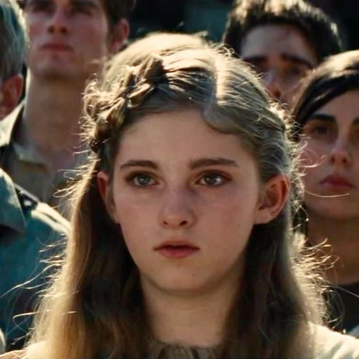
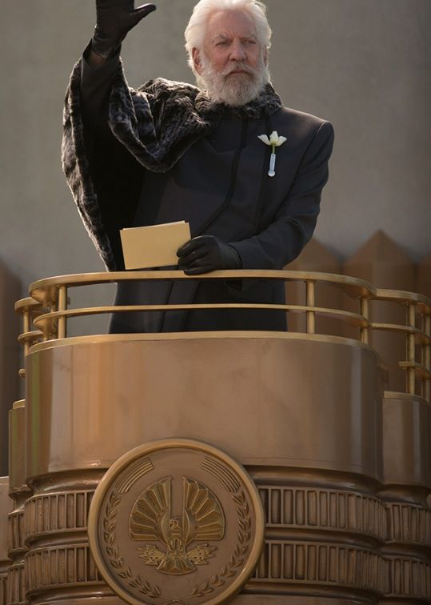
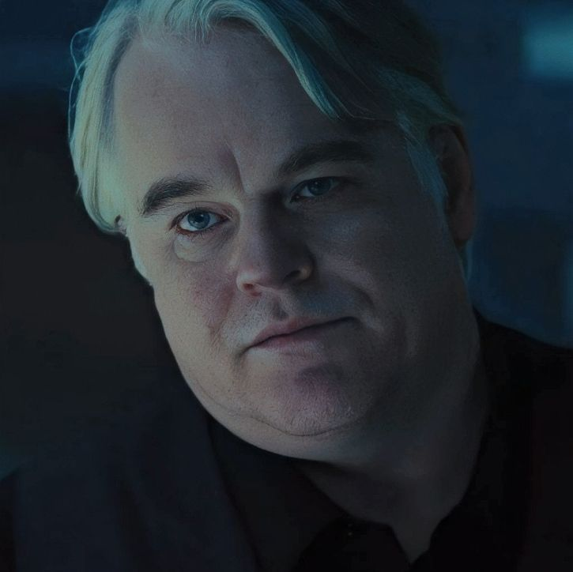

Katniss agora vive em uma casa confortável na Vila dos Vitoriosos, mas está atormentada por pesadelos, culpa e trauma. Enquanto isso, o Presidente Snow visita pessoalmente sua casa e deixa claro que não acredita no romance entre ela e Peeta, e exige que convença o país de que foi tudo real. “As faíscas se espalham, Srta. Everdeen. E o fogo pode se alastrar.” Se ela não for convincente, sua família e Gale estarão em perigo.
Katniss e Peeta são forçados a viajar pelos 12 distritos como parte da “Turnê da Vitória”. Mas ao invés de celebração, eles encontram miséria, opressão e revolta. Em Distrito 11, onde vivia Rue, Katniss presta uma homenagem sincera à menina — o que leva a uma revolta pública. A reação da Capital é brutal: executa publicamente manifestantes, inclusive um velho que fez o gesto dos três dedos. Katniss percebe que seu gesto de desafio nos Jogos se tornou símbolo de resistência, mesmo contra sua vontade. Enquanto isso, Gale é espancado em praça pública por defender um amigo contra os Pacificadores. Katniss corre para socorrê-lo, percebendo que a violência aumentou em todos os distritos.
Durante um anúncio nacional, Snow revela a regra especial do 75º Jogos Vorazes: “Os tributos serão escolhidos entre os vitoriosos vivos de cada distrito.” No Distrito 12, só há três: Katniss, Peeta e Haymitch. Katniss é a única mulher viva, então é automaticamente escolhida. Peeta se voluntaria no lugar de Haymitch. Katniss fica devastada. Ela percebe que a Capital quer matá-la, usando os próprios Jogos para apagar o símbolo que ela se tornou.
Katniss e Peeta são levados à Capital por trem. Lá, conhecem sua equipe de apoio:
Na arena, não são jovens inexperientes — mas campeões experientes, traumatizados e perigosos. Entre os destaques estão: Finnick Odair (D4): sedutor, carismático, mas profundamente ferido emocionalmente.
Johanna Mason (D7): agressiva, debochada, mas revoltada com o sistema.
Beetee e Wiress (D3): inteligentes, geniais com eletrônicos.
Mags (D4): idosa e silenciosa, que se sacrifica para salvar Finnick e Katniss.
Katniss inicialmente não quer fazer alianças, mas acaba unida a Finnick e Mags. Depois, aceita Beetee e Wiress, e percebe que há algo diferente: alguns tributos estão tentando protegê-la, não matá-la.
Wiress descobre que a arena tem formato de relógio, com ataques programados a cada hora: Sangue-chuva. Névoa ácida. Macacos assassinos. Pássaros que imitam gritos de entes queridos. Eles usam essa descoberta para sobreviver. Beetee propõe um plano: eletrocutar os Carreiristas usando um raio que atinge uma árvore diariamente. Mas o plano verdadeiro é mais profundo do que Katniss sabe...
Enquanto tenta realizar o plano com Beetee, Katniss começa a perceber que há um plano de fuga — e que ela é o centro dele. Finnick e Johanna claramente a estão protegendo. Katniss então atira uma flecha conectada ao fio elétrico na cúpula da arena, quebrando seu campo de força e colapsando o sistema dos Jogos. A arena entra em colapso. Katniss desmaia e acorda em uma aeronave rebelde.
Lá, ela encontra Haymitch, Beetee e Plutarch Heavensbee, o idealizador que secretamente fazia parte da rebelião o tempo todo. Eles revelam que tudo fazia parte de um plano para resgatá-la — o símbolo da revolução, o Tordo. Mas a notícia final é devastadora: Peeta foi capturado pela Capital. O Distrito 12 foi bombardeado e praticamente destruído. Gale conseguiu salvar Prim e a mãe de Katniss. O filme termina com um close nos olhos de Katniss. Ela está em choque, com raiva, mas cheia de determinação. O fogo da rebelião foi aceso de vez.
Protagonista da saga, símbolo da rebelião e do Tordo. Corajosa, leal, impulsiva e marcada por traumas profundos. Depois de vencer os 74º Jogos, torna-se uma ameaça ao poder da Capital. Luta constantemente entre proteger sua família, manter Peeta vivo e entender seu papel na revolução. Nos 75º Jogos, começa a perceber que há um plano maior ao seu redor.
Sensível, eloquente, empático e extremamente protetor. Vive um amor verdadeiro por Katniss, mesmo quando ela está confusa. Se mostra mais estratégico e corajoso nesta fase. Sempre tenta preservar a humanidade e proteger Katniss a todo custo. Se sacrifica constantemente em nome da coletividade.
Antigo vencedor dos Jogos, mentor de Katniss e Peeta. Irônico, traumatizado e alcoólatra, mas incrivelmente inteligente. Atua nos bastidores para proteger seus tributos, mesmo que não revele tudo. Participa do plano secreto da rebelião para retirar Katniss da arena.
Representante da Capital designada para o Distrito 12. Antes fútil e rígida com regras, começa a se importar verdadeiramente com Katniss e Peeta. Fica emocionalmente abalada ao vê-los forçados a voltar à arena. Mostra que mesmo alguém da Capital pode mudar ao ver a verdade.
Do Distrito 4. Jovem, carismático, sedutor e habilidoso com tridente. Esconde um passado sombrio por trás de seu charme. Apesar da aparência superficial, é leal, protetor e emocionalmente profundo. Cria uma conexão verdadeira com Katniss e a protege.
Do Distrito 7. Sarcástica, agressiva, rebelde e imprevisível. Odeia a Capital com paixão e não esconde seu desprezo. Finge ser instável para sobreviver, mas é extremamente inteligente. Ajuda Katniss em momentos-chave.
Do Distrito 3. Calmo, reservado e brilhante com eletrônicos. Planeja a sabotagem da arena com fios e energia elétrica. É uma peça estratégica fundamental no plano da resistência.
Também do Distrito 3. Excêntrica e mentalmente instável, mas genial. Descobre que a arena é um relógio. Sua fala repetitiva (“tic-tac”) é a chave para decifrar a mecânica do jogo.
TDo Distrito 4. Idosa e silenciosa. Mentora de Finnick, entra nos Jogos no lugar de outra jovem. Se sacrifica voluntariamente para ajudar o grupo. Representa coragem, nobreza e resistência silenciosa.
Irmã mais nova de Katniss. Frágil no início da saga, mas já demonstra coragem e compaixão. Sonha em ser curandeira e começa a ajudar no hospital do Distrito 12. É por ela que Katniss entra nos Jogos pela primeira vez. Representa inocência e a principal razão da luta de Katniss.
O estilista de Katniss (interpretado por Lenny Kravitz) é calmo, sensível e trata Katniss com respeito, o que a surpreende. Cinna é responsável por criar o visual da “Garota em Chamas”, que transforma Katniss de “tributo camponesa” em ícone nacional. Ele também envia mensagens sutis de revolta através do design.
Líder autoritário e manipulador de Panem. Cruel, estrategista e obcecado por controle e imagem. Vê Katniss como uma faísca perigosa para a ordem da Capital. Manipula os Jogos e os distritos para manter seu poder absoluto.
Novo idealizador dos Jogos, substitui Seneca Crane. Inteligente, persuasivo e misterioso. Secretamente faz parte da resistência, atuando dentro da Capital. Elabora a estrutura da arena do 75º Jogos, mas com intenções revolucionárias.